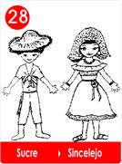
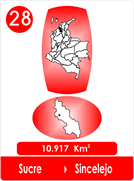
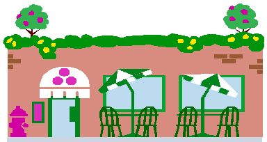
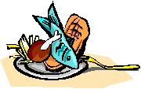
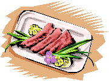
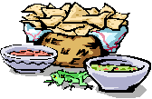
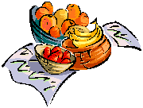

28 - Hostería La Sucreñita - Sucre
- Consulta a Jesús
- Fábulas de Colombia
- Metodo Corima
- Arbol
- Flor
- Fruto
- Estrellas Pequeñas
- Nostradamus
- La Ruta del Sol
- Fabula de Corima
- Productos y Servicios
- Mensajeros Celestiales
- Juguemos
- Articulos
- Estrellas Humanas
- Herramientas
- Plantas Milagrosas
- Adorables Fechas
- Videos


Doña Petra había quedado viuda, según ella, se había quedado sin soporte y a Nuri su hija, eso le disgustaba no podía ayudar por ser muy joven y no conseguía trabajo.
Entonces un día le dió la ventolera y amaneció con las mejores ideas para conseguir “soportes”, así Doña Petra no volvería a quejarse.
Mira Mami, de una vez por todas vamos a arreglar este asuntico, tu eres la mejor cocinera que hay por aquí, así que vamos a construir una Hostería y vamos a hacer un a lista con todo lo tuyo.
Entonces le pidieron a Don Anacleto construir unas buenas mesas y bancos. Además con siguieron hojas de palmas para hacer la gran enramada.

Nuri se hizo un delantal rojo de arandelas con grandes bolsillos para la platica. Luego pintó un enorme letrero que decía;

“La Gran Comilona Sucreña “
Jugos; De guineo bolita - de corozo - de coco -de piña
De zapote - de mango- de tamarindo -de guayaba.
Fritos: Arepehuevo - caramañola - patacón dorado.
Sopas: mote de queso con ñame y zumo de coco,
Sancocho de pescado - sancocho de gallina.
Arroz; de cangrejo - de ahuyama - de caraotas, de coco - de yuca - de plátano maduro con guiso - aguacate - berenjena - o topocho.
Pescados: mojara frita - pescado ahumado - pargo rojo.
Postres: ciruela - caballito de papaya - mango – tamarindo.

Al terminar le regaló un delantal bien bordado a Doña Petra y tres collares para verla bien elegante.
Don Anacleto le terminó una gran cocina y la adornaron con canastos y muchos colgantes de conchas y corales que sonaban con la brisa.
Doña Petra sonrió feliz y contenta.
La Hostería la Sucreñita, se llenó todos los días de música y buenos comensales.
La noticia se regó y llegaron muchos turistas, en la casa nadie volvió a quejarse